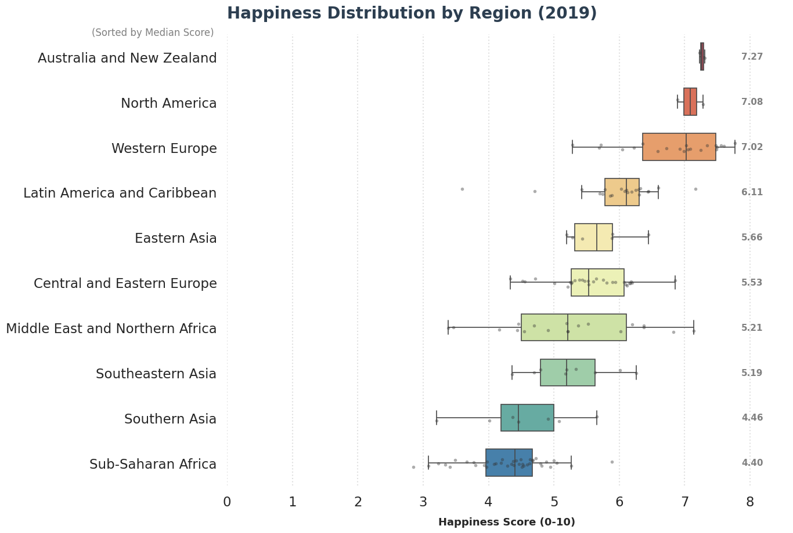

Our Story: Beyond the GDP Narrative
Introduction
Happiness is often linked to economic success, but is money really the whole story?
Through a series of visualizations, this project looks at how happiness changes across regions, over time,
and across social conditions, revealing the factors that shape well-being beyond income alone.
Datasets: 2015–2019
Topic: GDP & Happiness
Course: IE 421
Chapter 1
Is GDP Really the Whole Story

?Happiness Distribution by Region (2019), happiness score and per capita GDP scores in a boxplot diagram.
At first glance, the data seems to confirm a familiar story.
Regions such as Australia & New Zealand, North America, and Western Europe clearly fit the high-GDP, high-happiness narrative, sitting at the top of the happiness distribution, reflecting strong economic performance with high living standards. Similarly, regions like Southern Asia and Sub-Saharan Africa follow the opposite pattern, with both low GDP levels and lower happiness scores. This aligns well with the mainstream socio-political view: strong economies tend to produce better living conditions and, in turn, happier societies. So far, nothing seems surprising.
However, when we focus on regions with similar economic profiles, the picture becomes less explanatory. Eastern Asia and Central & Eastern Europe, for example, sit relatively close in terms of GDP, yet their happiness levels diverge in meaningful ways. This gap points to the influence of factors that extend beyond income alone.
Chapter 2
The Hidden Drivers of Happiness
Global Happiness Factors (2019) — Scatterplot Matrix.
If GDP is not the only indicator of happiness, the next question becomes clear: what actually separates happier societies from less happy ones? To explore this, we look beyond single rankings and examine how happiness relates to multiple social and economic factors at the same time.
As expected, GDP per capita shows a clear positive relationship with happiness. Higher income levels generally support better living conditions and higher well-being. Social support stands out even more strongly, showing a stable and consistent link with happiness across countries. Healthy life expectancy follows a similar pattern, reinforcing the role of long-term physical well-being.
However, the visualization also reveals several surprising contrasts. For instance, the relationship between GDP and freedom is far from expected. Even at high income levels, some countries report limited freedom, suggesting that economic success does not always come with personal or political autonomy. A similar pattern appears when we look at GDP and perceptions of corruption. While lower-income countries often struggle with corruption, the chart shows notable outliers where GDP is high, but corruption levels remain significant.
This challenges the assumption that economic development automatically leads to stronger institutions as well. Together, these patterns highlight a key insight: happiness emerges not from wealth alone, but on how social, political, and health conditions shape everyday life.
Chapter 3
Tracking Happiness Over Time (2015–2019)
Bubble Chart of Countries Including Their Populations (2015-2019)
This animated bubble chart shows how countries’ GDP per capita, happiness, and population change together over time. While economic growth often goes hand in hand with rising happiness, this pattern is far from universal. In Brazil, for instance, happiness peaks around 2015 despite relatively stable GDP levels, then declines sharply. On the other hand, some countries with rising or even rapidly changing GDP, such as the UAE, do not show equally strong changes in happiness levels.
These cases highlight that both stable and fast-growing economies can experience limited gains in well-being, reinforcing the idea that happiness depends on how economic performance interacts with social and institutional conditions, not on GDP growth by itself.
Chapter 4
Can We Predict Happiness? (2019)
Estimated Regression Line of Happiness Scores
Using the patterns we explored, we tried to estimate happiness levels for 2019 based on the data we had from years (2015-2018). The result shows an average difference of 0.523 points between the predicted and real happiness scores. In simple terms, the model gets fairly close, but it does not get everything right.
This outcome is expected. Although the dataset covers several fundamental economic and social determinants, such as income levels, social support, health conditions, individual freedoms, and corruption, it remains inherently limited in scope. Many influences on happiness, cultural values, subjective perceptions and political climate are either difficult to quantify or entirely absent from the data. For this reason, the model is unable to explain all variations in happiness outcomes.
Overall, the result shows that happiness is partly predictable, yet shaped by dimensions that extend beyond the measurable variables in this dataset.
Final
So… what?
This project aimed to understand what shapes happiness across countries and whether economic prosperity alone can explain differences in well-being.
The findings show that GDP provides an important foundation, as wealthier regions often report higher happiness levels. However, the analysis also makes clear that economic growth by itself is not enough.
Countries with similar income levels can experience very different happiness outcomes, and changes in GDP do not always lead to equal changes in well-being over time.
Social support, health, and freedom play a key role in shaping how economic resources are translated into daily life experiences.
Overall, the results highlight that happiness is influenced by a combination of economic and social factors, not by income alone.